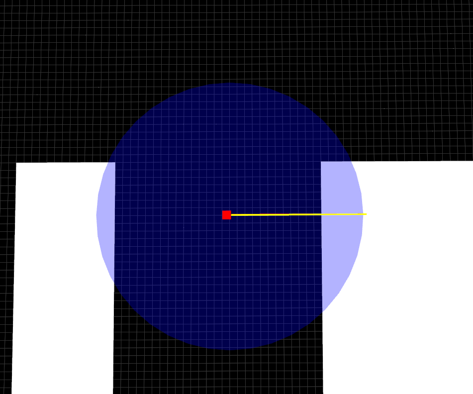
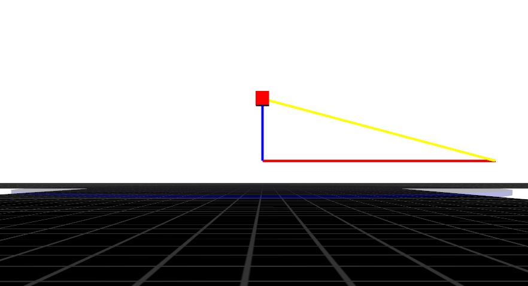
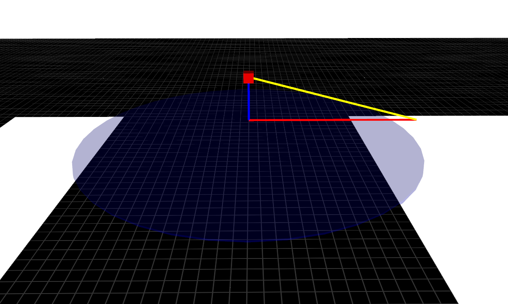
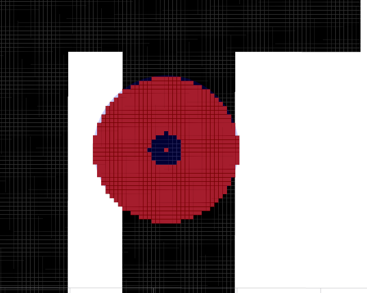
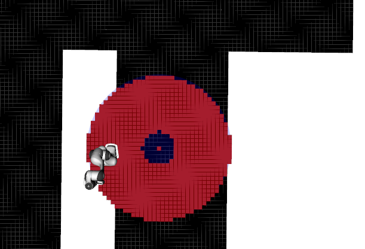
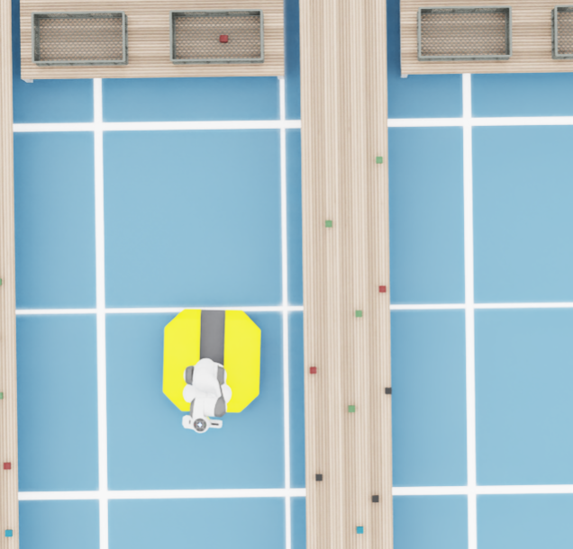

projected_reachability_analysis.cpp (Atual v1.0)
O nó ProjectedReachabilityAnalysis é responsável por resolver o problema de Alcançabilidade Inversa Geométrica.
Dada a posição de um objeto alvo no espaço 3D, este componente calcula onde a base do robô pode estar posicionada para que o braço consiga alcançar o objeto. Ele não valida cinemática inversa complexa (juntas), mas sim a viabilidade geométrica baseada no comprimento máximo do braço.
Note
Conceito de “Donut”:
O resultado prático deste algoritmo é uma zona em formato de anel (ou disco perfurado).
* Raio Externo: Limitado pelo alcance máximo do braço ajustado pela altura.
* Raio Interno: Limitado pela security_distance (o robô não pode estar em cima do objeto).
—
1. Matemática da Projeção 3D -> 2D
Para determinar a viabilidade da manipulação antes de mover a base, o sistema calcula a Região Viável da Base (Kinematic Footprint) no plano \(z\). Nesse caso o robô estava em cima de uma base móvel em \(z = 0.11\).
O algoritmo projeta a esfera de alcance máximo do manipulador (Workspace Sphere) no chão, considerando o offset vertical da montagem do braço.
Lógica Geométrica: A função deriva o raio 2D (\(r_{2d}\)) utilizando o Teorema de Pitágoras, onde a hipotenusa é o alcance máximo do braço e o cateto vertical é a diferença de altura entre o objeto e o ombro do robô.
Onde:
\(R_{max}\): Alcance máximo do manipulador menos um offset para evitar singularidade (Definido como 0.9m).
\(z_{base}\): Altura da primeira junta do manipulador (Definido como 0.11m).
Visualização de Debug (MarkerArray):
Para facilitar o desenvolvimento e a depuração visual no RViz, esta função publicava um MarkerArray contendo:
Disco Translúcido: Representa a zona de estacionamento válida no chão.
Cubo Vermelho: A posição exata do objeto alvo percebido.
Triângulo Vetorial: Linhas coloridas desenhando os catetos e a hipotenusa para validação visual da matemática.
Visualização do raio de alcançabilidade em 2D.

Visualização lateral do Triângulo de Cálculo (Catetos e Hipotenusa).

Visualização tanto do raio de alcançabilidade quanto do triângulo retângulo.

—
2. Parâmetros e Inicialização
O nó configura a resolução da malha de busca e a distância mínima de segurança. Também prepara os publicadores para depuração visual (Marcadores e Nuvem de Pontos).
ProjectedReachabilityAnalysis::ProjectedReachabilityAnalysis(const rclcpp::NodeOptions & options)
: Node("projected_reachability_node", options)
{
RCLCPP_INFO(this->get_logger(), "Projected Reachability Analysis (All Points) inicializado.");
this->declare_parameter<double>("path_resolution", 0.05);
this->declare_parameter<double>("security_distance", 0.2);
distanceToObstacle_ = static_cast<float>(this->get_parameter("path_resolution").get_parameter_value().get<double>());
security_distance = static_cast<float>(this->get_parameter("security_distance").get_parameter_value().get<double>());
decimals = count_decimals(distanceToObstacle_);
marker_publisher_ = this->create_publisher<visualization_msgs::msg::MarkerArray>("reachability_visualization", 10);
rclcpp::QoS qos(10);
qos.reliable();
qos.transient_local();
reachability_cloud_pub_ = this->create_publisher<sensor_msgs::msg::PointCloud2>("reachability_zone", qos);
}
—
3. Algoritmo de Expansão (BFS)
Para gerar os pontos discretos candidatos, o algoritmo utiliza uma Busca em Largura (BFS - Breadth-First Search) expandindo a partir da projeção do objeto no chão.
O Processo:
Cálculo do Raio: Determina o $R_{2d}$ disponível.
Expansão: Começa no centro (x, y do objeto) e expande para os 8 vizinhos.
Filtro de Alcance Máximo: Se a distância do ponto atual até o centro for maior que $R_{2d}$, o ponto é descartado e a expansão para naquela direção.
Filtro de Segurança (Raio Interno): Se a distância for menor que
security_distance, o ponto é visitado para continuar a expansão, mas não é adicionado à lista de candidatos válidos (valid_candidates).
Isso garante que o robô não tente planejar uma rota para colidir com o objeto (ficar “dentro” dele).
Visualização da BFS dentro do raio de alcançabilidade.

Visualização da BFS com o modelo do robô ao lado do objeto.

Visualização da simulação real.

std::vector<std::pair<float, float>> ProjectedReachabilityAnalysis::get_reachable_points(
const geometry_msgs::msg::Pose& origin,
const double& ROBOT_BASE_Z,
const double& MAX_REACH_3D, std::vector<std::pair<float, float>>& valid_candidates)
{
// 1. Cálculo do Raio
double vertical_dist = std::abs(origin.position.z - ROBOT_BASE_Z);
if (vertical_dist > MAX_REACH_3D)
{
RCLCPP_WARN(this->get_logger(), "Objeto inalcançável! Altura (%.2f) > Alcance Max (%.3f)", vertical_dist, MAX_REACH_3D);
return valid_candidates;
}
double radius_2d = std::sqrt(std::pow(MAX_REACH_3D, 2) - std::pow(vertical_dist, 2));
const float radius_sq = static_cast<float>(radius_2d * radius_2d);
const float security_distance_squared = security_distance * security_distance;
RCLCPP_INFO(this->get_logger(), "Calculando pontos acessíveis. Raio 2D: %.4f m", radius_2d);
// 2. BFS
std::pair<float,float> origin_pair = {
round_to_multiple(origin.position.x, distanceToObstacle_, decimals),
round_to_multiple(origin.position.y, distanceToObstacle_, decimals)
};
valid_candidates.push_back(origin_pair);
std::queue<std::pair<float, float>> q;
q.push(origin_pair);
std::set<std::pair<float, float>> visited;
visited.insert(origin_pair);
auto offsets = get_offsets(distanceToObstacle_);
int steps = 0;
int max_steps = 30000;
while(!q.empty())
{
steps++;
if(steps > max_steps) break;
std::pair<float, float> current_pos = q.front();
q.pop();
for(int i = 0; i < 8; i++)
{
float nx = round_to_multiple(current_pos.first + offsets[i][0], distanceToObstacle_, decimals);
float ny = round_to_multiple(current_pos.second + offsets[i][1], distanceToObstacle_, decimals);
std::pair<float, float> neighbor = {nx, ny};
if(visited.find(neighbor) != visited.end())
{
continue;
}
float dx = neighbor.first - origin_pair.first;
float dy = neighbor.second - origin_pair.second;
float dist_sq = dx*dx + dy*dy;
if (dist_sq > radius_sq)
{
continue;
}
visited.insert(neighbor);
q.push(neighbor);
if(dist_sq >= security_distance_squared)
{
valid_candidates.push_back(neighbor);
}
}
}
publish_reachability_cloud(valid_candidates);
visualization_msgs::msg::MarkerArray marker_array;
rclcpp::Time current_time = this->now();
visualization_msgs::msg::Marker disk;
disk.header.frame_id = "world"; disk.header.stamp = current_time;
disk.ns = "reachability"; disk.id = 0; disk.type = visualization_msgs::msg::Marker::CYLINDER;
disk.action = 0; disk.pose.orientation.w = 1.0;
disk.pose.position = origin.position; disk.pose.position.z = 0.0;
disk.scale.x = radius_2d * 2.0; disk.scale.y = radius_2d * 2.0; disk.scale.z = 0.01;
disk.color.b = 1.0; disk.color.a = 0.2;
marker_array.markers.push_back(disk);
marker_publisher_->publish(marker_array);
return valid_candidates;
}
—